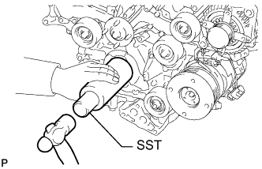
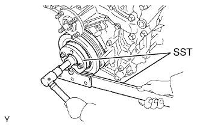
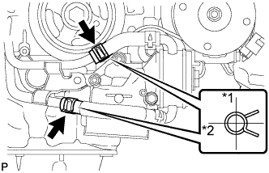

ПЕРЕДНИЙ САЛЬНИК КОЛЕНЧАТОГО ВАЛА > УСТАНОВКА |
| 1. УСТАНОВИТЕ ПЕРЕДНИЙ САЛЬНИК КОЛЕНЧАТОГО ВАЛА |
|  |
Нанесите универсальную консистентную смазку на кромку нового сальника.
С помощью SST и молотка запрессуйте сальник так, чтобы его поверхность была заподлицо с краем крышки цепного привода ГРМ.
| 2. УСТАНОВИТЕ ШКИВ КОЛЕНЧАТОГО ВАЛА |
|  |
Используя SST, установите шкив коленчатого вала и закрепите его установочным болтом шкива.
| 3. УСТАНОВИТЕ КРОНШТЕЙН МАСЛЯНОГО ФИЛЬТРА |
Установите кронштейн масляного фильтра с новой прокладкой и закрепите его 2 гайками и болтом.
| 4. ПОДСОЕДИНИТЕ ПЕРЕПУСКНОЙ ПАТРУБОК ОХЛАЖДАЮЩЕЙ ЖИДКОСТИ В СБОРЕ (для моделей с масляным радиатором) |
|  |
Подсоедините 2 шланга и перепускную трубку охлаждающей жидкости.
| *1 | Вверх |
| *2 | Назад |
Заверните 3 болта.
| 5. УСТАНОВИТЕ РАДИАТОР В СБОРЕ |
Установите радиатор (Нажмите здесь).